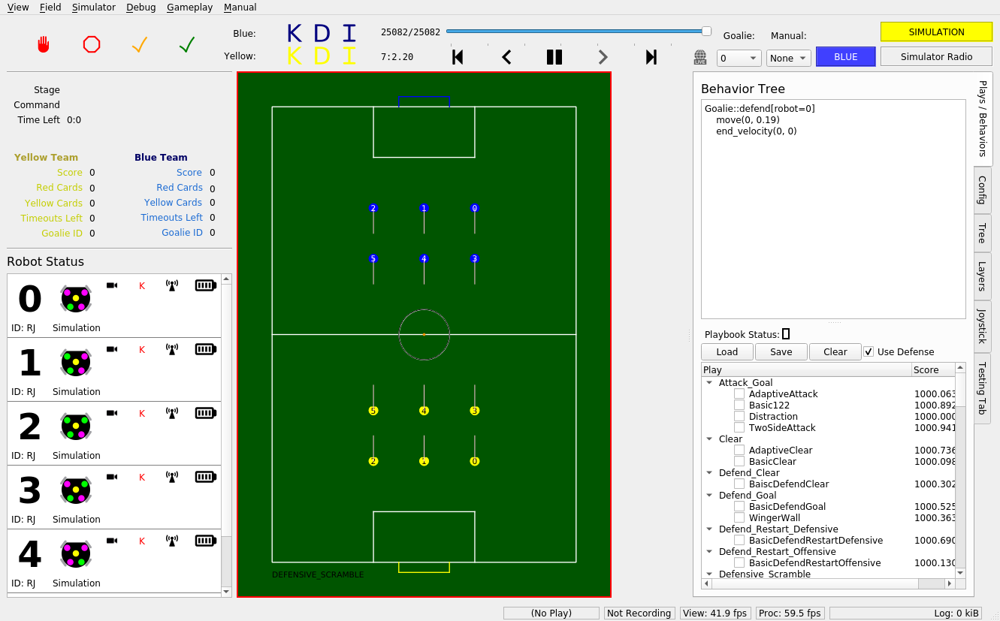

Installation
There are two main ways to install our software. The first is use a native or virtual machine running Ubuntu 22.04, and the second is to use Docker.
Note
If you elect to use Docker, you need to ensure your system has sufficient memory as Docker is not the greatest with RAM management. In particular, it’s recommended that you have at least 16 GB of RAM allocated.
Native/Virtual Machine Setup
We only provide official support for Ubuntu 22.04 due to ROS2. Make sure you are on an Ubuntu 22.04 machine before continuing. For Windows users, using WSL2 with Ubuntu 22.04 will work. The steps to set this up can be found here. For Mac users, Ubuntu 22.04 can be emulated in a virtual machine. For M1 Macs specifically, using the arm64 version of Ubuntu 22.04 with the application UTM has worked in the past.
First, clone the repository from GitHub:
git clone https://github.com/RoboJackets/robocup-software.git
Then cd to the repository you just cloned, and run the setup scripts to
install all required dependencies:
cd robocup-software && ./util/ubuntu-setup && ./util/git-setup
To simulate the vision data we’d get from a real field camera setup, we’ll use
ER-Force’s simulator. For that, clone their repo, and cd into it. Note, this should
NOT be cloned inside the robocup-software repository, so you should cd .. if necessary.
git clone https://github.com/robotics-erlangen/framework.git
cd framework
Then, build their code with the following:
mkdir build && cd build
cmake ..
make simulator-cli
This builds an executable in framework/build/bin. Like any other
executable, it can be run with [filepath-to-executable]. Since we’re
already in the framework/build/ directory, simply run:
./bin/simulator-cli
Note also that the absolute filepath works from any directory:
~/framework/build/bin/simulator-cli
We’re a Division B team, so add the flag -g and the option 2020B to use the Division B field dimensions, like so:
./bin/simulator-cli -g 2020B
Sadly, this program has no output, so when you run it nothing will appear to happen. However, it will become obvious after you start our UI whether or not you’ve correctly started the simulator or not.
Building the Stack
In another terminal, change directories back into robocup-software.
Make sure you’re on the most updated version of ros2 branch. This is
where the latest working version of our codebase exists. (See Contributing page for
more information).
git pull
git checkout ros2
Then, source the ROS setup file. This allows your shell to use ROS commands.
source /opt/ros/humble/setup.bash
If you’re on zsh, source setup.zsh instead. (If you don’t know what
zsh is, you’re not on zsh.)
Then build the codebase. If you are running this on your own dedicated Linux machine, you are welcome to simply run:
colcon build
However, if you are on a VM/Docker, then you need to restrict the amount of resources
that colcon takes up, by running:
colcon build --parallel-workers 1 --executor sequential
After building, we need to source our custom ROS setup. Run the following in
the robocup-software directory:
source install/setup.bash
(Again, if you’re on zsh, source the .zsh version instead.)
Now we are good to go. As a sanity check, the following command should print out
rj_robocup:
ros2 pkg list | grep rj_robocup
To launch our stack, which contains our AI that sends commands to the simulator, plus a UI to show what’s happening, run the following:
ros2 launch rj_robocup soccer.launch.py
If everything is working properly, you should see the following window show up.

Docker Setup
Instead of using an Ubuntu 22.04 machine, you can also install our software using our Docker image that runs Ubuntu 22.04. The Docker image also has our tech stack and all the dependencies pre-installed with a desktop GUI. The Docker setup should work on any platform (Windows, Mac, ARM, x86, etc.).
The easiest way to get started with Docker is to just download Docker desktop. Note that when using Docker desktop, you will need to have the app open in the background to run your containers. For installation details, see the Docker Desktop Manual.
Once you have Docker installed, please follow the steps for installing and using our RoboCup image at DockerHub.
Once you’re done, follow the instructions on building the stack.
Shortcuts
Now that you know how to source dependencies, build, and run our code, you can take advantage of some neat shortcuts. These shortcuts all depend on the following knowledge:
- Sourcing only needs to happen every time a new terminal is opened, and building
needs to happen when C++ or launch.py files are changed.
So, after you’ve built once, the install/setup.bash script will exist in
your version of the repo, and you won’t have to build again until you make
changes to C++ or launch files. That means the next time you open up a new
terminal, you can launch sim with:
. ./source.bash
make run-sim
source.bash is an alias for the two source commands you saw above, and
make run-sim will launch both ER-Force’s Framework (the physics simulator)
and our stack (ros2 launch rj_robocup sim.launch.py).
To stop this process (like any other) press CTRL-C in the command line. You may have to press CTRL-C twice.
make run-sim
When you make changes to any C++ files, you’ll need to build again to see your changes take effect. If you’ve already built once on your machine, though, you can build again more quickly with:
make again
. ./source.bash
The source.bash line is necessary to source the file in install/, which
is refreshed on each build. (Note: this does not build any CMake-related
files, so if you’re editing those, use make perf as usual.)
There are a few different ways to build our code. See the makefile for more details, but in short:
make all # builds with full debugging symbols
make debug # alias for make all
make all-release # builds with 0 debugging symbols
make perf # builds with some debugging symbols; preferred method
TODO(Kevin): add description of running on field comp (move that md file over too)